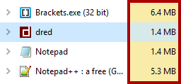
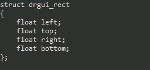
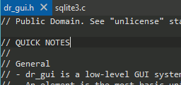
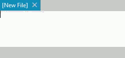

dred is a fast, ultra lightweight alternative to other modern text editors.

dred is less than 1MB, a single executable, and uses less memory than most other popular text editors.

Select and edit multiple sections at the same time. Stop wasting time making the same changes multiple times.

dred has a simple but powerful configuration system. Configs are stored in plain text files which are easily edited.

Execute complex commands using dred's command bar. Just hit escape to toggle activation of the command bar.
Fast and Lightweight
dred's load times are almost instant, and it uses about the same amount of memory as Notepad on Windows. It's also
less than 1MB and the portable version is a single executable.
Cross Platform
dred currently supports Linux (GTK+ 3) and Windows, with a heavy focus on keeping the look and feel of text editing
consistent across each platform.
Simple
dred get's out of the way and lets you get on with the job. There's no annoying, usless junk floating around on the UI
so you can focus on what's important - editing text.
And best of all, it's free and open-source!
Additional Features
- Bash-style command bar (ESC to activate)
- Recent files history
- Detection and reloading of externally modified files
- Have multiple files open at a time
- Printing
- Word wrap
- Block indent/unindent (Tab, Shift+Tab)
- Automatic indentation
- Unlimited undo/redo
- Line numbers
- Configurable tab stops
- Custom key bindings:
- Example:
bind "Compile" "CTRL+F9" "!gcc %"
- Find and replace
- Goto line
- Support for both Windows and Unix line endings
- Zooming (Ctrl + Mouse Wheel)
- Support for inserting the current date and time
- DPI awareness on Windows